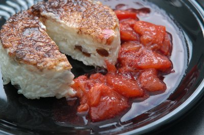

| Zutaten für 6 Portionen: | |
| 0.6 l | Milch |
| 1-2 Msp | Salz |
| 1-2 EL | Zucker |
| 20g | Butter |
| 180g | Milchreis |
| 1-2 EL | Rosinen |
| 6 Stück | Pflaumen |
| 1 El | Zucker |
| 1-2 Msp | Zimt |
| 2 EL | Wasser |
Milch mit Salz, Zucker, Butter, Milchreis und Rosinen aufkochen und auf kleiner Flamme 20 Minuten bei gelegentlichem Rühren köcheln. Köcheln, bis alle Flüssigkeit aufgesogen ist. Dabei darauf achten, dass der Reis am Pfannenboden nicht anbräunt.
Pfanne vom Herd nehmen. 6 Formen oder Tassen bereitstellen. Förmchen am Boden mit Zimtzucker bestreuen (ergibt eine braune Oberfläche beim Stürzen) oder mit kaltem Wasser ausspülen (damit sie leichter aus der Form kommen beim Stürzen). Dann Reis auf die Formen verteilen. Oben glatt streichen und abkühlen lassen. Danach kalt stellen. Zum Anrichten auf Teller Stürzen.
Steinfrucht Kompott (Aprikosen, Zwetschgen, Pflaumen)
Früchte vierteln und entsteinen, dann in feine Scheiben (2-3mm) schneiden. Mit allen anderen Zutaten kurz aufkochen und 3 Minuten köcheln lassen. Vom Herd nehmen, etwas abkühlen lassen bis es nicht mehr dampft. Dann anrichten.
Milchreis noch warm als Brei essen.
Sandra Keller Feb 2012
Hat gut geschmeckt. RE Feb 2012
@LINKBACK_TAG@ @WAKELOCK@